Moduł 6 - Własna wtyczka do QGIS#
Tematem dzisiejszego wykładu będzie pisanie własnych wtyczek do QGISa. To ostateczne zadanie tego semestru - kreacja własnej wtyczki. Oczywiście, cała wiedza dotycząca programowania w QGIS jest użyteczna w kontekście tworzenia wtyczki - funkcjonalności programuje się tak samo.
W przypadku wtyczek dochodzi również kwestia związana z tworzeniem modułów Pythona oraz kreacją interfejsu graficznego. Zagadnienie to jest na tyle duże, że podzielimy je pomiędzy następne wykłady.
Startujemy!
Od samego początku. Czym jest wtyczka?
Wtyczka ma za zadanie rozszerzać funkcjonalność QGISa, udostępniać narzędzia w wygodny sposób z intefrejsem graficznym pozwalając na operowanie narzędziami. Wszystko w QGISie może zostać zmodyfikowane i nie ma ku temu żadnych przeszkód (możemy też modyfikować zachowanie samego QGISa). Wtyczki pisane są również przez społeczność QGISa i udostępniane w oficjalnym repozytorium wtyczek dostępnym w oprogramowaniu:

Nie każda, ale większość wtyczek ma interfejs graficzny w postaci otwieranego okienka (niektóre po prostu uruchamiają się z paska). Przykładowo, może to wyglądać tak:
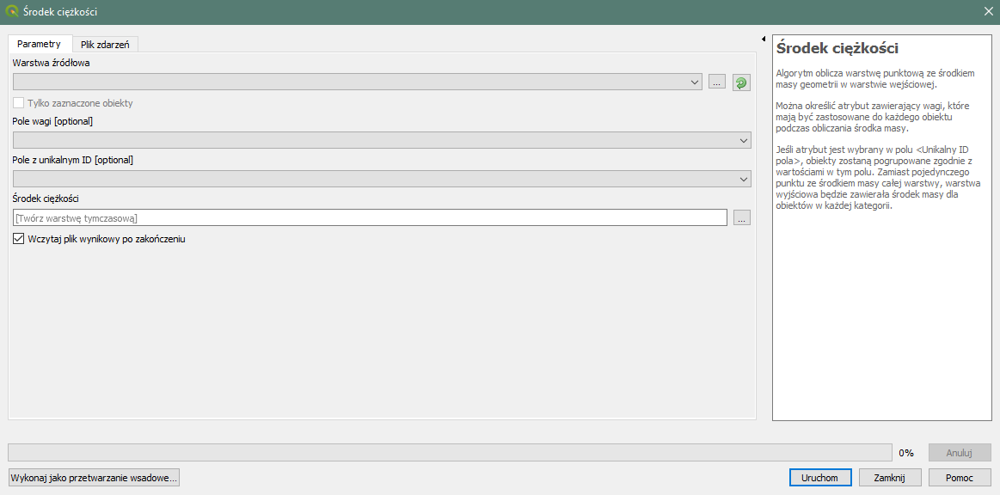Cały interfejs oraz zachowania przycisków zostały wcześniej oprogramowane i są uruchamione “pod spodem” podczas pracy QGISa.
Tworzymy własny plugin#
Na początek gdzie przechowywać ?
Pluginy przechowywane są w folderze wewnętrznym QGISa pod ścieżką (w Windows):
C:\Users\NAZWA_UZYTKOWNIKA\AppData\Roaming\QGIS\QGIS3\profiles\default\python\plugins
Gdzie za “NAZWA_UZYTKOWNIKA” wstawiamy własną nazwę uzytkownika.
Tam każdy folder to jeden plugin. Dla swojego plugina też tworzymy taki folder:
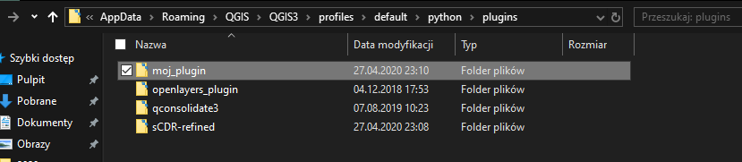Przygotowanie pluginu do QGISa wymaga stworzenia:
- modułów - jak w bibliotece progamistycznej
- interfejsu graficznego użytkownika
Każdy plugin musi zawierać ustalone pliki w folderze żeby został wczytany. Są to elementy, jakie musi zawierać moduł Python, aby został przez interpreter odnaleziony, a wiec plik __init__.py oraz plik interfejsu oraz kodu wykonywalnego:
- `__init__.py` - inicjalizacyjny (nawet jeśli pusty)
- form.py - z interfejsem graficznym
- plik z kodem wykonywalnym
Powinien być też dołączony plik z metadanymi metadata.txt
Plik
__init__.pymożemy stworzyć ręczniePlik form.py wygenerujemy z narzędzia do projektowania interfejsów graficznych
Plik z kodem wykonywalnym musimy napisać sami do tego polecam korzystać z czegoś lepszego niż notatnika - może być Notepad++ (ma kolorowanie składni), ale najlepiej korzystać z IDE (nie Jupyter) np Spyder lub (osobiście polecam JetBrains PyCharm). Dalej będę korzystał z PyCharma, więc od razu pokażę jak go używać. Uwaga: Dla uproszczenia, kod wykonywalny umieścimy w pliku
__init__.py
Spyder zainstalowany został już z Anacondą a PyCharm dostępny jest za darmo na stronie: https://www.jetbrains.com/pycharm/
Po otwarciu IDE (czy to Spyder czy PyCharm), należy rozpocząć tworzenie nowego projektu w folderze, który stworzliśmy dla naszej wtyczki. Odbywa się to po prostu za pomocą ikony folderu:
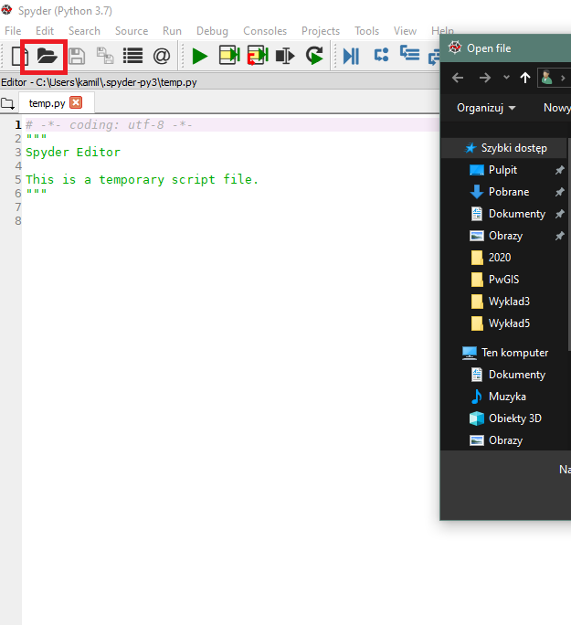Lub File -> Open w PyCharm:
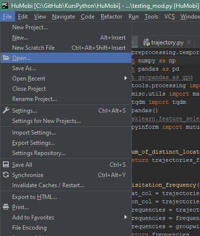Następnie tworzymy pusty plik __init__.py w naszej wtyczce. Dzięki temu narzędzie ładujące wtyczki, wie, że jest to wtyczka Pythona.
Już prawie jesteśmy przygotowani do tworzenia pluginu. Jeszcze tylko jedna rzecz….
Każda zmiana we wtyczce wymaga wyłączenia i włączenia QGISa na nowo. Żeby tego uniknąć, warto zainstalować sobie wtyczkę z repozytorium Plugin Reloader . Wystarczy wtedy kliknąć ikonę wtyczki by odświeżyć nasz kod
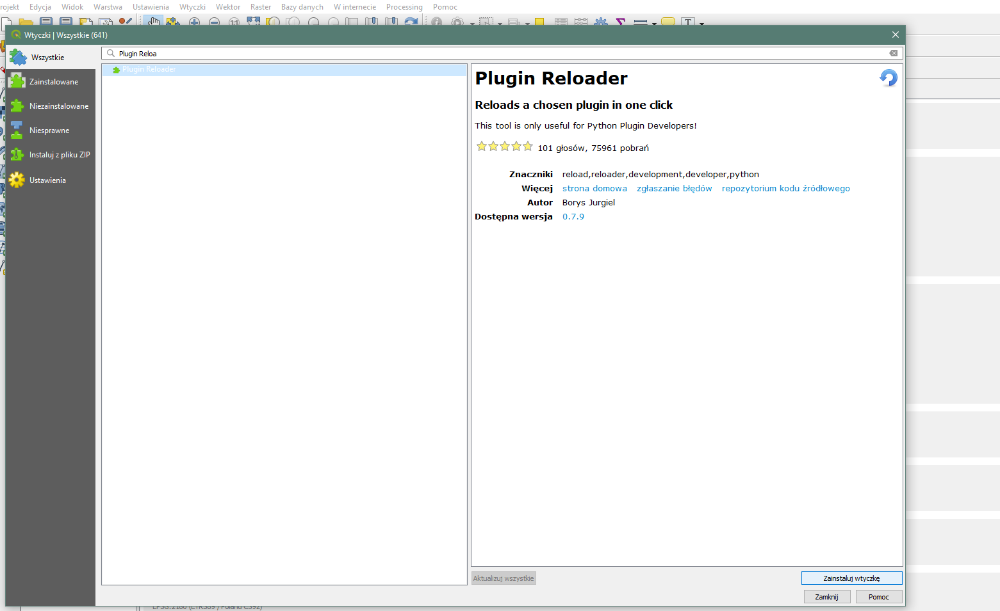Piszemy plugin!#
Zaczniemy od stworzenia potrzebnej struktury plików. Po pierwsze skłamałem, bo __init.py__ nie może być pusty. Musi zawierać on definicję funkcji classFactory, która powoduje że plugin zostaje załadowany do QGIS. Jako atrybut przyjmuje QgisInterface (automatycznie taki parametr wysyła QGIS przy uruchomieniu), więc musimy funkcję na to przygotować. Funkcja zwrocić ma klasę - klasę, która jest naszą wtyczką. Kod ma wyglądać jak poniżej:
def classFactory(iface):
return nazwaKlasyPluginu(iface)
Zatem niech będzie:
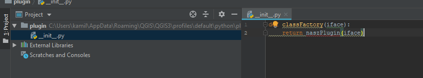Dygresja: UWAGA: wcięcia mają być 4 spacjami nie tabem, gdy mamy 4 spacje, QGIS po prostu nie czyta kodu. Ustawić to możemy w PyCharmie:
Moglibyśmy dokonać importu z kodu z innego pliku (wtedy funkcja classFactory wyglądała by inaczej!) i stworzyc osobny plik z kodem wtyczki. Dla uproszczenia, wszystko będziemy pisać w jednym pliku __init.py__
Gdybyśmy chcieli zrobić to w osobnym pliku to funkcja classFactory musiałaby wyglądać tak:
def classFactory(iface):
from .plik_osobny import nazwaWtyczki
return nazwaWtyczki(iface)
Kontynuujemy w tym samym pliku. Nasza wtyczka jest klasą, która jak już ustaliliśmy nazywya się “NaszPlugin”. Stwórzmy klasę i napiszmy też funkcję inicjalizującą
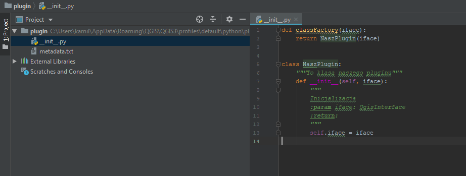Stworzyliśmy klasę o nazwie NaszPlugin, która ma funkcję inicjalizacji, która obowiązkowo (!) również ma przyjmować obiekt klasy QgisInterface. To warunek załadowania wtyczki. W classFactory zwracamy NaszPlugin(iface), czyli to jest instancjonowanie tej właśnie klasy.
class NaszPlugin:
"""To klasa naszego pluginu"""
def __init__(self, iface):
"""
Inicjalizacja
:param iface: QgisInterface
:return:
"""
self.iface = iface
Do naszego pliku będziemy jeszcze wracać. Teraz zajmijmy się dwoma pozostałymi elementami czyli:
metadane
interfejs
Metadane są obowiązkowe i bez nich wtyczka nie zostanie wczytana. Plik metadata.txt (taka nazwa jest obowiązkowa), musi znaleźć się w folderze z wtyczką. Zawierać ma informacje o wtyczce w ustalonych znacznikach. Wyglądać ma tak:
[general]
name=NaszPlugin
description=opis
about=opis dlugi
version=1.0
qgisMinimumVersion=3.0
author=Ja
email=some@em.ail
repository=URL
Na samym dole możemy nieobowiązkowo dodać:
icon=icon.png
To nazwa pliku z ikoną, która zamieszczona jest w folderze wtyczki (Plik icon.png załączony do wykładu).
Wtyczka już powinna się wczytywać. Należy na nowo uruchomić teraz QGISa. Podczas uruchamiania pojawi się błąd - dlatego, że brakuje nam jeszcze kilku obowiązkowych funkcji. Niemniej jednak w repozytorium wtyczek plugin powinien być dostępny.
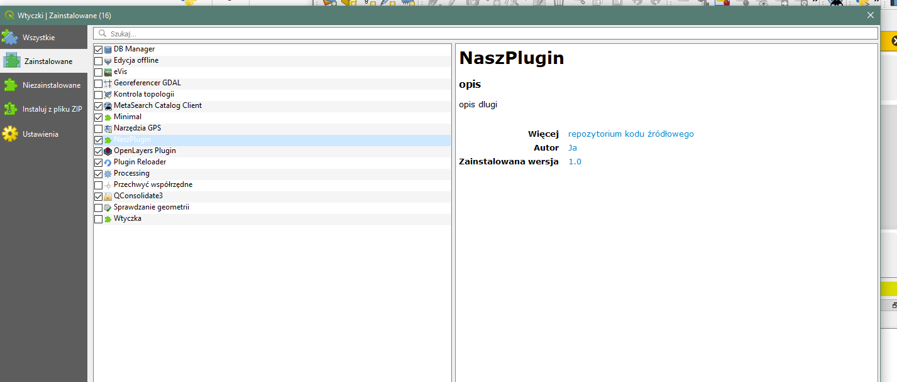Zaznaczmy ją i zamknijmy repozytorium. Wtyczka będzie już dostępna dla QGISa.
Nadal brak nam jednak ważnych rzeczy - interfejsu i dwóch obowiązkowych funkcji w pliku __init__. Zacznijmy od interfejsu.
Interfejs będziemy tworzyć w oprogramowaniu QtDesigner (zaznaczałem wcześniej że powinien się z QGISem zainstalować).
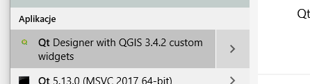Qtdesigner to dość intuicyjne narzędzie projektowania interfejsów. Po uruchomieniu pojawi nam się takie okno:
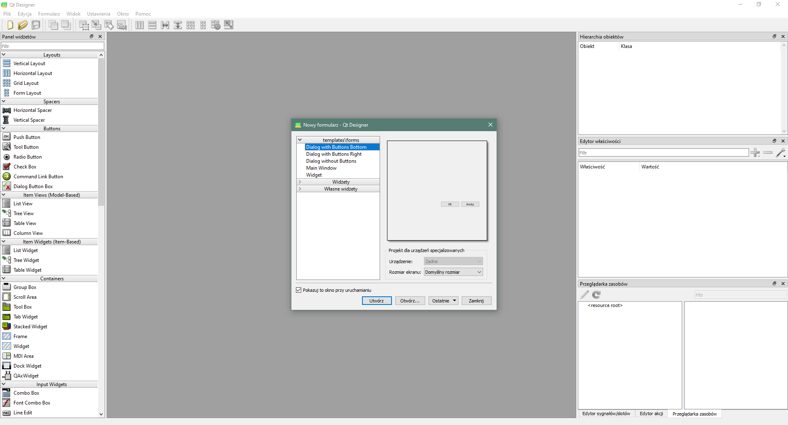Możemy wybrać “template” z dwoma przyciskami na dole. Od razu dodane zostaną 3 elementy - okno główne oraz dwa przyciski.
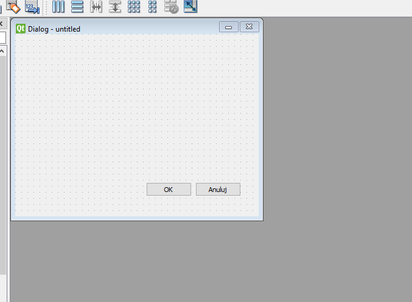Teraz omówmy podstawowe funkcjonalności QDesignera
-Tworzenie, otwieranie i zapisywanie interfejsu do formatu *.ui
-Panel widżetów - przeciąganie elementów
-Herarchia obiektów
-Parametry widżetów
-Nazewnictwo widżetów
Utworzony interfejs zapisujemy do pliku *.ui Najlepiej w folderze pluginu. Ja nazwałem go form.ui
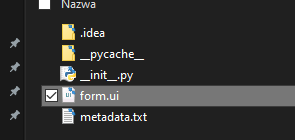Sam plik nie wystarczy, bo nie może być zrozumiany przez Pythona. Plik ui to tak naprawdę XML:
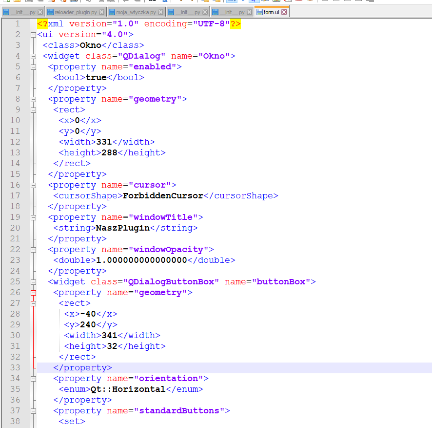Należy go konwertować do pliku *.py
Niezbędne będzie środowisko PyQt5 (konwerter z Qt do Pythona), żeby je zainstalować uruchamiamy Anaconda Prompt i wpisujemy:
pip install pyqt5
Na pasku powinna pojawić sie informacja gdzie zainstalowano PyQt:
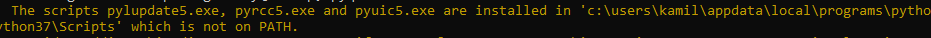Tam będzie znajdować się plik pyuic5.exe, który nas interesuje. Zapamiętujemy ścieżkę do tego pliku.
Teraz w folderze z wtyczką musimy otworzyć okno poleceń Windows PowerShell:
shift + prawy przycisk myszy gdzies na folderze, przy odznaczonych wszystkich plikach:
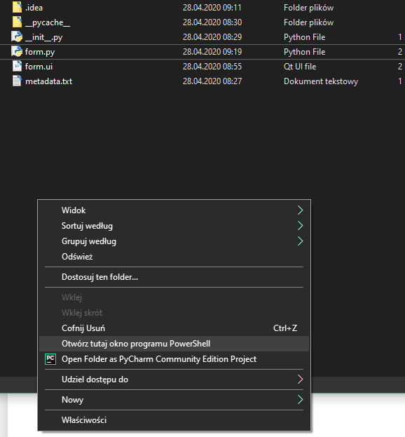Teraz musimy wywołać konwerter, czyli plik pyuic5.exe. Należy wpisać całą ścieżkę do pliku oraz podać dwa parametry plik wejściowy *.ui i wyjściowy *.py
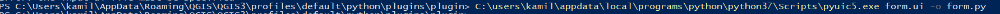U mnie to jest:
C:\users\kamil\appdata\local\programs\python\python37\Scripts\pyuic5.exe form.ui -o form.py
Powstanie w folderze plik form.py, który będzie zawierać interfejs, który zaprojektowaliśmy w QtDesigner:
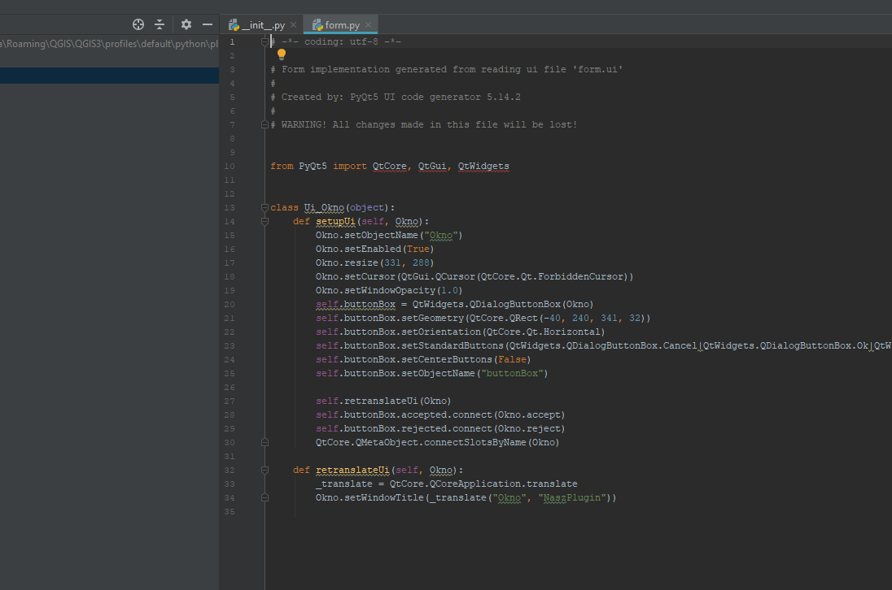Za każdym razem gdy zmienimy coś w interfejsie, trzeba będzie ponownie wykonać konwersję!
Wpisywanie całej ścieżki na raz byłoby żmudne, więc dla ułatwienia możemy stworzyć sobie batch file , który będzie miał zapisną tę scieżkę.
W folderze z pluginem tworzymy nowy plik “konwert.bat” i otwieramy go notatnikiem. W środku wpisujemy:
@sciezka_do_pliku_exe %1 %2 %3 %4 %5 %6 %7 %8 %9
U mnie to jest:
@C:\users\kamil\appdata\local\programs\python\python37\Scripts\pyuic5.exe %1 %2 %3 %4 %5 %6 %7 %8 %9
Teraz zamiast wywoływać w PowerShell całą scieżkę piszę:
./konwert form.ui -o form.py
(kropka i ukośnik są ważne!)
Interfejs gotowy!#
Wtyczka jeszcze nie zadziała. Brakuje nam dwóch ważnych funkcji w pliku głównym - initGui() oraz unload()
initGui() odpowiada za to co dzieje się po uruchomieniu pluginu.
unload() za to co dzieje się po jego zamknięciu.
Gdy dodamy te funkcje, nawet jako puste, przy ponownym uruchomieniu QGISa nie pojawi się nam już błąd
def initGui(self):
pass
def unload(self):
pass
Nie możemy jej jednak uruchomić, bo QGIS nie wie, gdzie ma się znaleźć ikonka do jej uruchamiania. Oprogramowujemy to w funkcji initGui(). Zacznijmy od importu funkcjonalności PyQT na samej górze pliku:
from qgis.PyQt.QtGui import *
from qgis.PyQt.QtWidgets import *
---------------------------------------------------------------------------
ModuleNotFoundError Traceback (most recent call last)
Input In [4], in <cell line: 1>()
----> 1 from qgis.PyQt.QtGui import *
2 from qgis.PyQt.QtWidgets import *
ModuleNotFoundError: No module named 'qgis'
W initGui oprogramowujemy to gdzie i jak w QGIS ma zostać osadzona wtyczka.
Zaczynamy od stworzenia “akcji” czyli przycisku uruchomienia. To obiekt klasy QAction z biblioteki Qt. Wygląda on następująco:
QAction(ikona,nazwa,lokalizacja)
Ikonę należy ująć w inny obiekt Qt - QIcon, którego syntax to:
QIcon(sciezka_do_pliku)
Całość zatem to (z moją ścieżką do ikony):
QAction(QIcon("""C:\\Users\\kamil\\AppData\\Roaming\\QGIS\\QGIS3\\profiles\\default\\python\\plugins\\plugin\\icon.png"""),"NaszPlugin",self.iface.mainWindow())
Tworzymy dla niej atrybut klasy:
self.action = QAction(QIcon("""C:\\Users\\kamil\\AppData\\Roaming\\QGIS\\QGIS3\\profiles\\default\\python\\plugins\\plugin\\icon.png"""),"NaszPlugin",self.iface.mainWindow())
Następne polecenie informuje gdzie go umieścić, jest metodą interfejsu (który już przypisaliśmy wtyczce w funkcji inicjalizującej init:
self.iface.addToolBarIcon(self.action) #ta funkcja dodaje na głównym pasku
I ostatnie - co ma się stać jak klikniemy? Oczywiście uruchomić okno. Można to oprogramować w initGui, ale stwórzmy osobną funkcję na funkcjonalności własne wtyczki.
Odwoływanie się do innych funkcji jest dość nietypowe. Aby uruchomić inną funkcję należy wpisać:
nazwa_obiektu_uruchamiającego.na_co_reagowac(nazwa_sygnalu).connect(nazwa_fukcji_uruchamianej)
W tym przypadku:
self.action.triggered.connect(self.run)
Czyli self.action po byciu klikniętym (triggered) uruchamia funkcję run. Tę funkcję oczywiście należy dopisać na dole pliku.
Razem initGui wygląda tak:
def initGui(self):
self.action = QAction(QIcon("""C:\\Users\\kamil\\AppData\\Roaming\\QGIS\\QGIS3\\profiles\\default\\python\\plugins\\plugin\\icon.png"""),"NaszPlugin",self.iface.mainWindow())
self.iface.addToolBarIcon(self.action)
self.action.triggered.connect(self.run)
Zanim zaczniemy testować wtyczkę, należy oprogramować zamykanie wtyczki. W przeciwnym wypadku każde odświeżenie wtyczki spowoduje stworzenie nowej wtyczki (a więc dodanie nowej ikony na pasku) i tak w nieskończoność. Tworzmy funkcję unload() i przeciwnie do tego co zrobiliśmy w initGui teraz każemy usunąć ją z paska i usunąć akcję z pamięci QGISa:
def unload(self):
self.iface.removeToolBarIcon(self.action)
del self.action
na dole dodajemy pustą funkcję run:
def run(self):
pass
Teraz możemy uruchomić QGISa. Wtyczka powinna być dostępna na pasku:
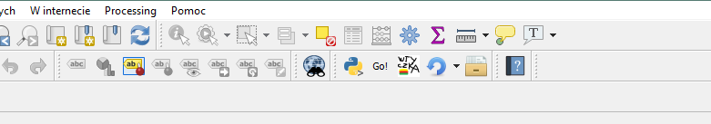Po jej wciśnięciu nic się nie dzieje. To dlatego że nie oprogramowaliśmy uruchamiania interfejsu. Na początku musimy z naszego pliku form.py zaimportować stworozny interfejs (to jest klasa). Ja nazwałem główne okno “Okno” więc w pliku form.py mam klasę Ui_Okno.
Importuję poprzez:
from .form import Ui_Okno
W run() oprogramowujemu uruchamianie okna po kliknięciu na wtyczkę:
def run(self):
self.window = QDialog() #przygotowuje pustą klasę QDialog
self.form = Ui_Okno() #do self.form instancjonuje klasę Ui_Okno()
self.form.setupUi(self.window) #uruchamiamy metodę setupUi (z form.py) i jako argument podajemy nasz przygotowany obiekt QDialog
self.window.show() #pokazujemy okno
Odświeżamy wtyczkę i działa!
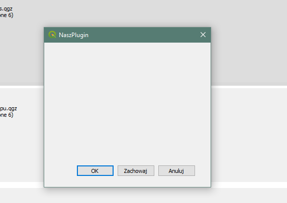Cały plik:
from qgis.PyQt.QtGui import *
from qgis.PyQt.QtWidgets import *
from .form import Ui_Okno
def classFactory(iface):
return NaszPlugin(iface)
class NaszPlugin:
"""To klasa naszego pluginu"""
def __init__(self, iface):
"""
Inicjalizacja
:param iface: QgisInterface
:return:
"""
self.iface = iface
def initGui(self):
"""Inicjalizacja ikony i uruchomienia"""
self.action = QAction(QIcon("""C:\\Users\\kamil\\AppData\\Roaming\\QGIS\\QGIS3\\profiles\\default\\python\\plugins\\plugin\\icon.png"""),"NaszPlugin",self.iface.mainWindow())
self.iface.addToolBarIcon(self.action)
self.action.triggered.connect(self.run)
def unload(self):
"""Usuwanie wtyczki po zamknięciu"""
self.iface.removeToolBarIcon(self.action)
del self.action
def run(self):
"""Uruchamianie wtyczki, główny moduł"""
self.window = QDialog()
self.form = Ui_Okno()
self.form.setupUi(self.window)
self.window.show()